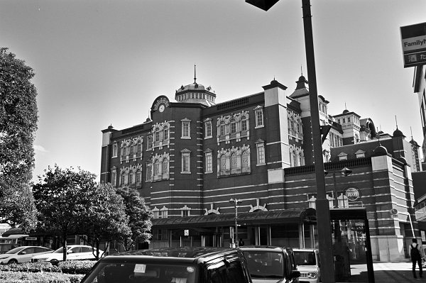

TKJE18_高崎・上越線
JR_深谷駅 Fukaya
籠原駅
←← 高崎・上越線 →→
岡部駅

2018/10 ﾍﾟﾝﾀｯｸｽLX M28mm ｱｸﾛｽ
2018/10 ﾍﾟﾝﾀｯｸｽLX M28mm ｱｸﾛｽ
2018/10 ﾍﾟﾝﾀｯｸｽLX M28mm ｱｸﾛｽ
2018/10 ﾍﾟﾝﾀｯｸｽLX M28mm ｱｸﾛｽ
2018/10 ﾍﾟﾝﾀｯｸｽLX M28mm ｱｸﾛｽ
2014/12
2014/12
戻る
ﾎｰﾑ